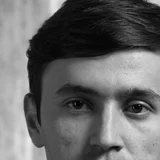
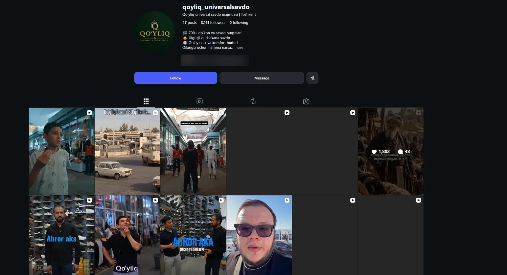
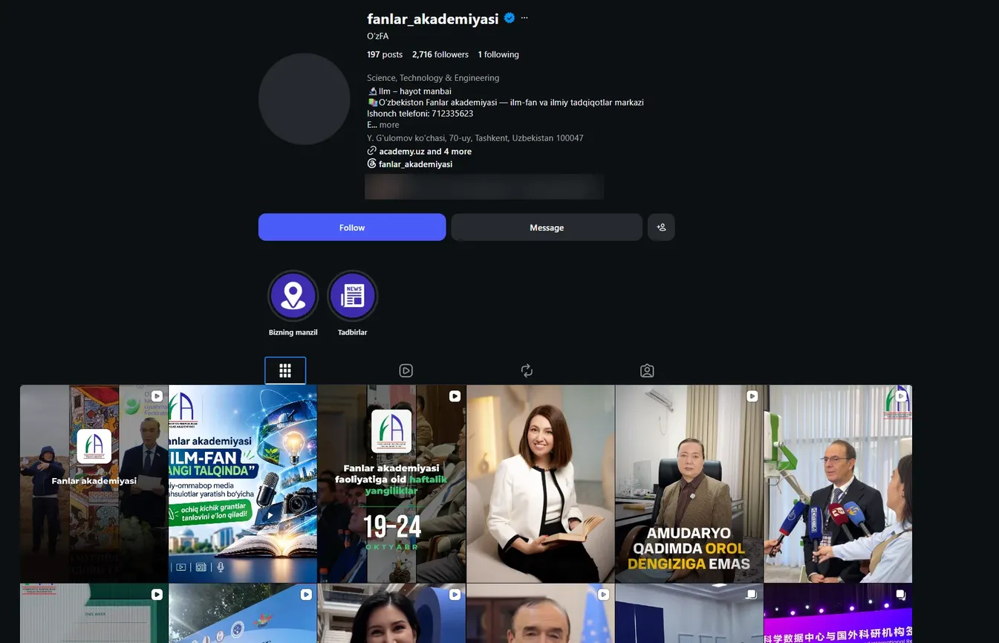

Jasur Ismoilov, kontentmakerBiznes uchun Reels va Instagram kontent
G'oya va ssenariydan tortib suratga olish, kadrda boshlovchilik va montajgacha bitta odam qiladi. Akkauntingiz har hafta yangi Reels bilan to'ladi, siz biznesingiz bilan bandsiz.


Qo'yliq savdo majmuasi: 2,5 oylik natija
Toshkentdagi 700 dan ortiq do'kon joylashgan savdo majmuasining Instagram sahifasi. Sotuvchilar bilan intervyular, bozor tarixi haqidagi Reels va kadrda o'zim boshlovchi sifatida.


Shaxsiy blog: ismoiliy_
Kitob va san'at haqidagi blog. 97 ta post, 20 mingdan ortiq obunachi, Anvar Obidjon va Jontemir she'rlari asosidagi Reels. Auditoriyani noldan yig'ish tajribasi mijoz akkauntiga ham ishlaydi.
- Kameraga erkin gapirish va o'z ovozida hikoya qilish
- Matn, ssenariy va subtitr bilan ishlash
- Har bir Reels uchun alohida vizual uslub


O'zbekiston Fanlar akademiyasi
Rasmiy, tasdiqlangan davlat akkaunti uchun kontent: haftalik yangiliklar anonslari, olimlar bilan suhbatlar, ilmiy faktlar haqidagi Reels. Rasmiy tashkilot bilan ishlash tartibi va talablarini bilaman.


Xizmatlar
Alohida xizmat yoki hammasi bitta oylik paketda. Narx hajmga qarab kelishiladi.
Kontent reja va ssenariy
Biznesingiz, mijozingiz va raqobatchilaringizni o'rganib, bir oylik Reels rejasi va har biriga ssenariy.
Suratga olish
Do'kon, ofis yoki ishlab chiqarishda vertikal 9:16 formatda suratga olish, intervyu va ko'cha so'rovlari.
Kadrda boshlovchi
Brendingiz nomidan kameraga gapiraman, sotuvchi va mijozlar bilan intervyu olaman.
Montaj
Dinamik montaj, subtitr, musiqa va brend ranglari. Har bir Reels 30-60 soniya.
Akkaunt yuritish
Joylash jadvali, matnlar, hashteglar va sahifa ko'rinishi bir uslubda.
Oylik hisobot
Obunachi, ko'rish va qamrov o'sishi, qaysi Reels ishladi va keyingi oy rejasi.
Ish jarayoni
Birinchi Reels odatda boshlangandan keyin bir hafta ichida chiqadi.
Tanishuv
Biznes, mahsulot va maqsadni bilib olaman, akkauntni tahlil qilaman.
Reja
Bir oylik kontent reja va ssenariylarni siz bilan kelishamiz.
Suratga olish
Bir yoki ikki kunda oylik materialni olamiz.
Montaj va joylash
Reels tayyorlanadi, tasdiqlaysiz va jadval bo'yicha chiqadi.
Hisobot
Oy oxirida raqamlar va keyingi oy uchun tuzatishlar.

Jasur Ismoilov haqida
24 yosh, Toshkent. Kontentmaker va kitob blogeri. TASMA Production jamoasida savdo majmuasi, davlat tashkiloti va shaxsiy brendlar uchun Reels qilaman.
Kadr ortida ham, kadr oldida ham ishlayman: g'oyani topaman, ssenariyni yozaman, kameraga gapiraman va montajni o'zim yig'aman. Shuning uchun bitta odam bilan kelishasiz va natija uchun bitta odam javob beradi.
Akkauntingiz uchun kontent reja
Biznesingiz haqida Telegramda yozing. Akkauntni ko'rib chiqib, birinchi oy uchun g'oyalar va narxni aytaman.